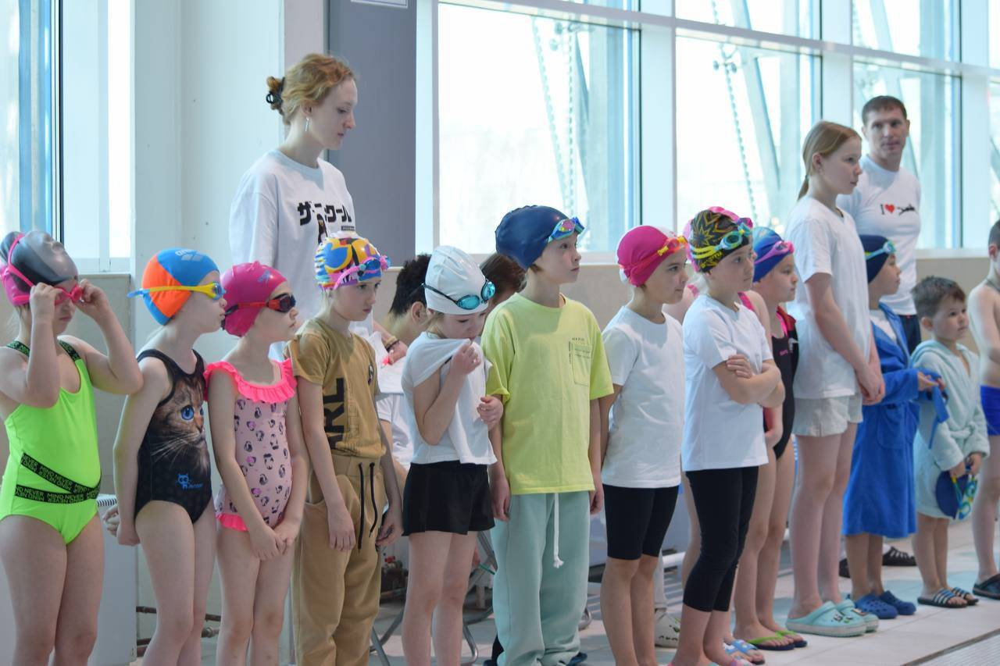

Мой спортивный путь
Плавание стало важной частью моей жизни. За 12 лет тренировок я научилась быть выносливой, дисциплинированной и внимательной к технике.
Моё плавание, спортивный путь и тренерство
Я занимаюсь плаванием уже 12 лет, плаваю за сборную ИРНИТУ и продолжаю развиваться в любимом виде спорта.
Перейти к разделу о тренерствеПлавание стало важной частью моей жизни. За 12 лет тренировок я научилась быть выносливой, дисциплинированной и внимательной к технике.
В этом стиле особенно важны правильное положение тела, спокойное дыхание, чувство воды и ровный ритм движений.

Полгода я являюсь детским тренером по плаванию. Мне нравится помогать детям привыкать к воде, осваивать технику и видеть их первые успехи.